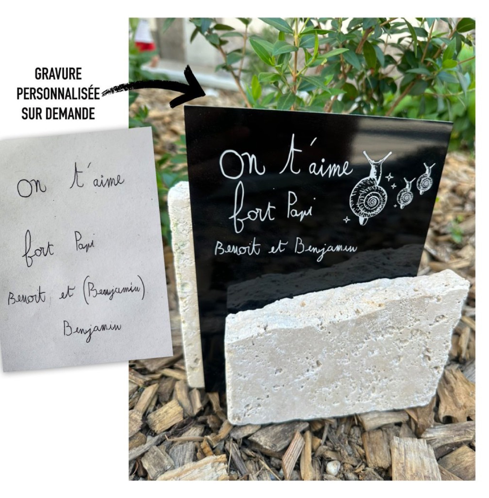
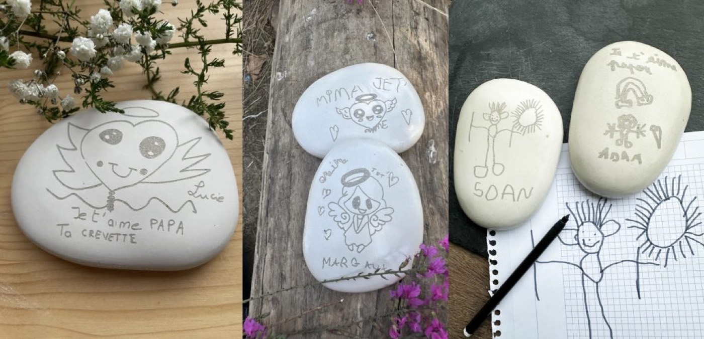

Les enfants vivent eux aussi le deuil, même s’ils l’expriment différemment des adultes. Souvent, ils trouvent plus facilement les mots avec un dessin, un cœur ou une petite phrase écrite de leur main.
Ces créations spontanées sont de véritables témoignages d’amour. Malheureusement, un dessin sur une feuille de papier s’abîme avec le temps.
À L’Atelier Inspire, je propose de graver fidèlement le dessin ou l’écriture d’un enfant sur une ardoise naturelle ou une plaque en inox. Chaque trait est reproduit avec soin, afin de préserver cette émotion pour de nombreuses années.
Participer à cet hommage permet aussi à l’enfant de trouver sa place dans le deuil. Son dessin devient un souvenir durable, un lien précieux avec la personne disparue.

Il suffit simplement de m’envoyer une photo du dessin ou du message. Je le transforme ensuite en une gravure personnalisée, résistante au temps et aux intempéries.
Parce qu’un simple « On t’aime fort Papi », écrit avec les mots d’un enfant, vaut parfois bien plus qu’un long discours.
Préserver ces dessins, c’est conserver une part d’enfance, d’amour et de mémoire. Une manière délicate de rappeler que les émotions des plus jeunes méritent elles aussi d’être entendues et de traverser le temps.
